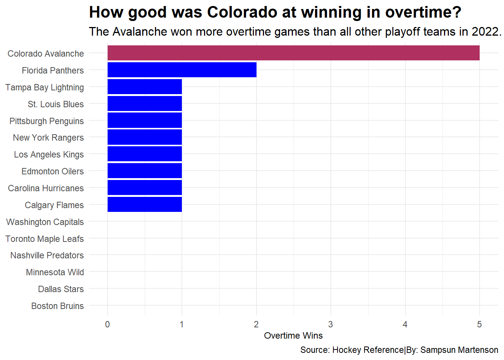
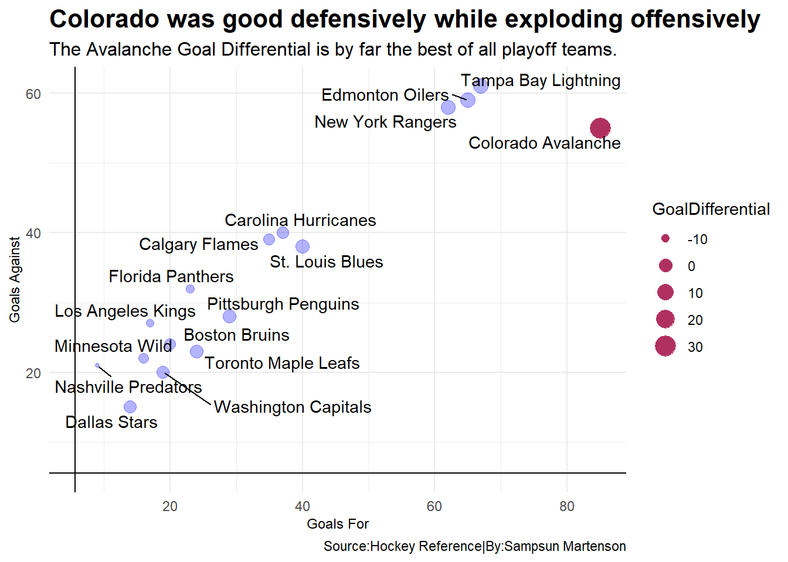
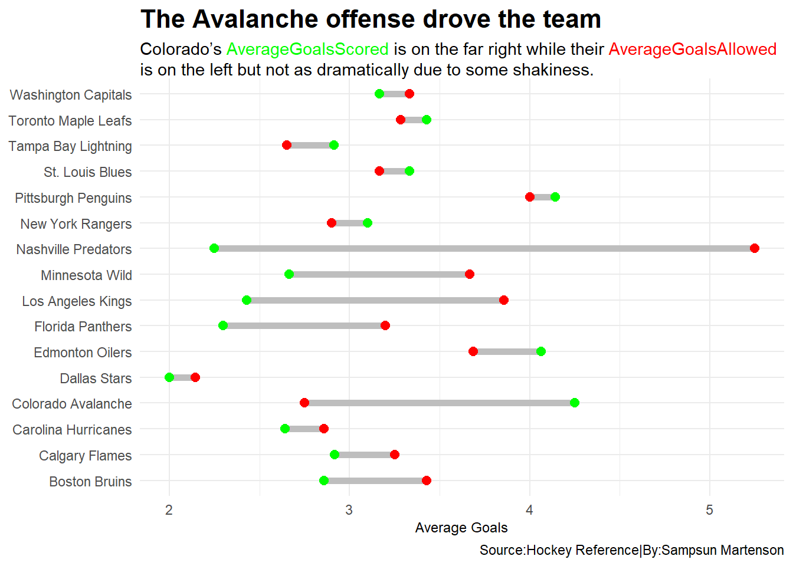

In 2022 the Colorado Avalanche hockey team had an incredibly dominant playoff run which ended with them lifting the most coveted trophy in the sport, the Stanley Cup. There were many different factors that contributed to the overall domination.
The three main factors being overtime victories, point differential, and how the goal scoring was able to carry the team when the goalkeeping and defense may have let the team down.
To show how great the Avalanche were at winning in overtime let’s compare them to the other playoff teams in 2022.
Code
library(tidyverse)library(ggalt)library(gt)library(ggbeeswarm)library(ggrepel)library(ggtext)#| message: false#| warning: falseplayoff <-read_csv("data/AvalancheStats.csv")playoffs <- playoff %>%mutate (GoalDifferential = DIFF, GoalsAgainst = GA,GoalsFor = G )avs <- playoffs %>%filter(Team =="Colorado Avalanche")ggplot() +geom_bar(data=playoffs, aes(x=reorder(Team, OW), weight= OW), fill="blue") +geom_bar(data=avs, aes(x=reorder(Team, OW), weight= OW), fill="maroon") +theme_minimal() +coord_flip() +labs(x ="Team",y ="Overtime Wins",title="How good were the Avalanche at winning in overtime?", subtitle="Colorado had more overtime victories than any other playoff team in 2022.",caption="Source: Hockey Reference|By: Sampsun Martenson") +theme(plot.title =element_text(size =16, face="bold"),axis.title =element_text(size=9),plot.subtitle =element_text(size=12),axis.text.x =element_text(size=9),axis.title.y =element_blank() )

Code
ggsave("image.png")
This stat is a great place to start to show just how shut down and resilient this Avalanche team was. They went into overtime a total of six times and won all but one of them over the course of their playoff run. This also included two overtime victories in the finals.
The next stat we can look to is point differential to show just how ridiculous this Avalanche team was when scoring goals compared to other playoff teams. They were able to explode offensively frequently which helped them when their defense was still getting their footing in certain series.
Overall the Avalanche defense did round into form enough to be the best team out of the final four for goals against but without the tremendous scoring happening in front of them Colorado may not have had enough time to round into form.
Code
library(tidyverse)library(ggrepel)ggplot() +geom_point(data=playoffs, aes(x=G, y=GA, size=GoalDifferential), color="blue", alpha=.3) +geom_point(data=avs, aes(x=G, y=GA, size=GoalDifferential), color="maroon") +geom_vline(xintercept =5.7) +geom_hline(yintercept =5.55) +geom_text_repel(data=playoffs, aes(x=GoalsFor, y=GoalsAgainst, label=Team) )+theme_minimal()+labs(x ="Goals For",y ="Goals Against",title="Colorado kept with the head pack defensively while exploding offensively.", subtitle="The Avalanche Goal Differential is by far the best of all playoff teams.",caption="Source:Hockey Reference|By:Sampsun Martenson") +theme(plot.title =element_text(size =16, face="bold"),axis.title =element_text(size=9),plot.subtitle =element_text(size=12),axis.text.x =element_text(size=9),axis.title.y =element_text(size=9) )

The final piece of this puzzle comes from how dominant the offense was able to be even when they may have been allowing more goals per game than the other high caliber defensive playoff teams.
While teams like the Stars were able to lock down completely defensively they shut down offensively. This was what made this Avalanche team so dangerous because they could keep you off the board just long enough for the offense to strike and give them control back.
This kind of play also lead to the Avalanche goals per game being worse than their overall goals allowed due to getting better defensively as the playoffs went on.
Code
average <- playoffs%>%group_by(Team) %>%mutate (AverageGoalsScored = (G/GP),AverageGoalsAllowed = (GA/GP)) %>%select(Team, AverageGoalsScored, AverageGoalsAllowed)ggplot() +geom_dumbbell(data=average, aes(y=Team, x=AverageGoalsScored, xend=AverageGoalsAllowed),size =2,colour ="grey",colour_x ="green",colour_xend ="red")+theme_minimal()+labs( x ="Average Goals",y ="Team",title="The Avalanche averaged enough scoring to carry the team", subtitle ="If <span style = 'color:green;'>AverageGoalsScored</span> is on the right the team is doing well. If <span style = 'color:red;'>AverageGoalsAllowed</span> is on the right, not so much.", caption="Source:Hockey Reference|By:Sampsun Martenson") +theme(plot.title =element_text(size =16, face="bold"),axis.title =element_text(size=9),axis.text.x =element_text(size=9),axis.title.y =element_blank(),plot.subtitle =element_textbox_simple() )

As the stats have shown us the Avalanche were able to play a full team game where the defense would normally hold their own while the offense dominated. Even when the defense ended up being towards the top of the pack the offense was the thing that boosted the team to the heights they were able to reach.
The x-factor of the playoff run was when the games reached overtime however, being able to not only win some overtime games but dominate them for the most part is a key through line of the 2022 Avalanche DNA.
All of these factors come together to make the 2022 Avalanche a tremendous playoff team. They had everything that you could want from a modern hockey team when making a run at a championship.
When teams in the future try to emulate this Colorado team and the playoff run they had in 2022 they may have quite the challenge ahead of them.